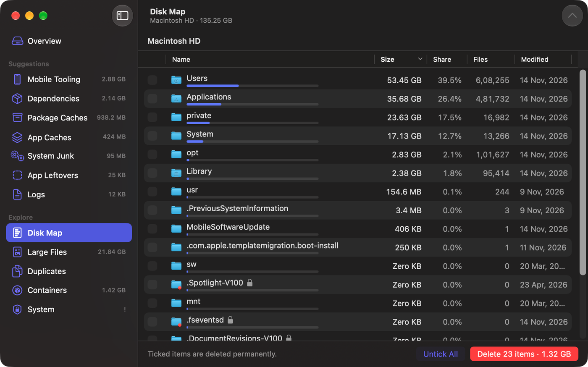
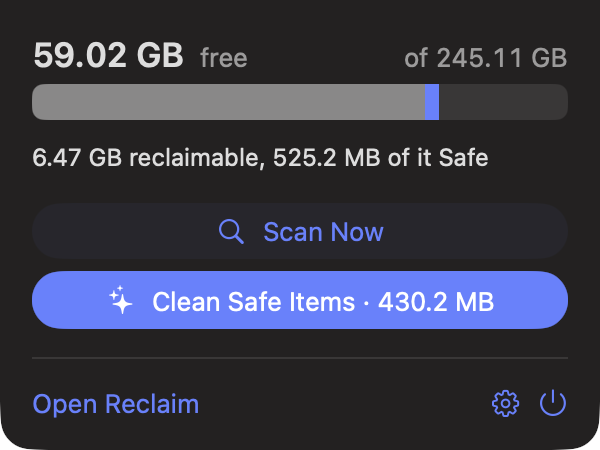
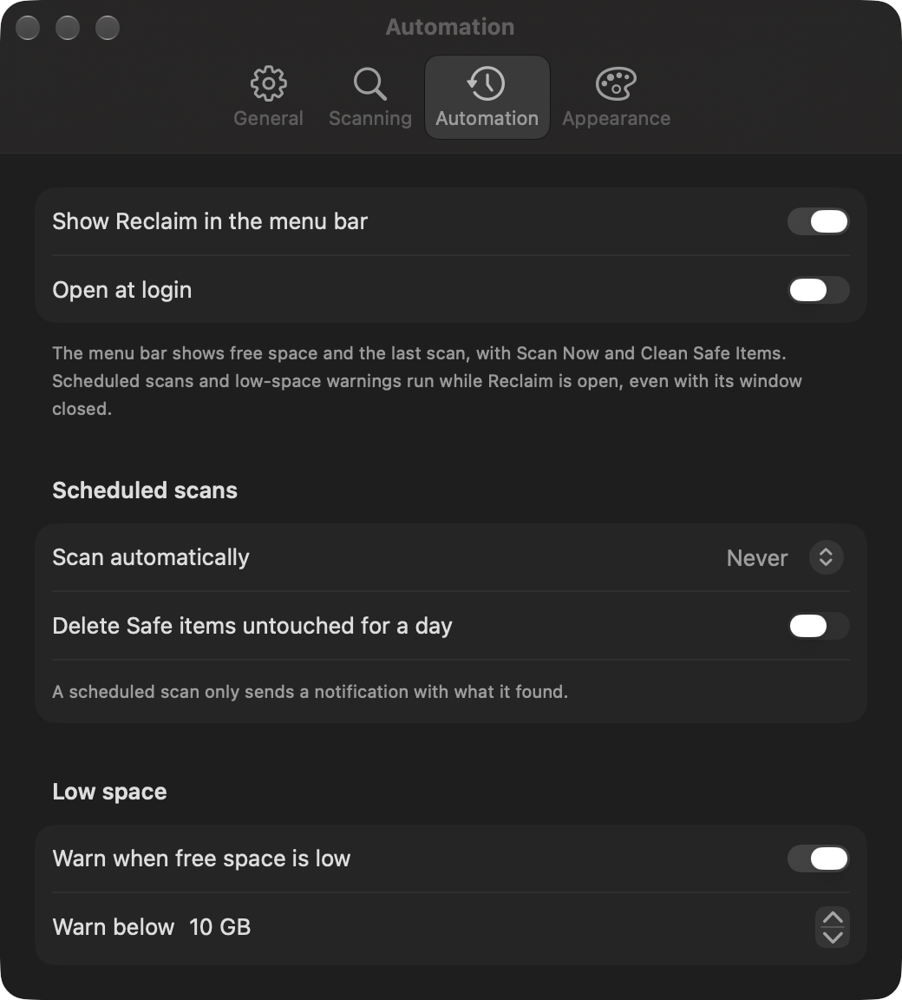
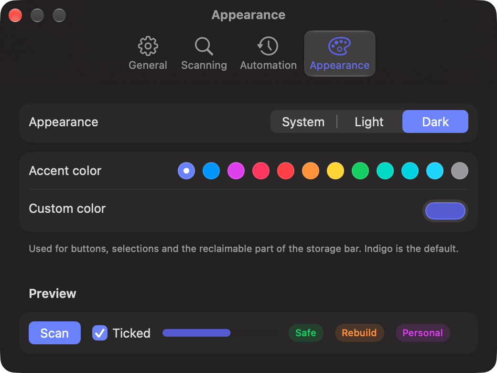

Knows where junk hides
Build output, installed dependencies and package-manager caches, found by rules written from real developer Macs.
See every ruleReclaim finds the build caches, dependencies, simulators and Docker leftovers filling your Mac, tells you what's safe to delete, and frees the space in one click.
Knows where developer tools leave things
Features
Build output, installed dependencies and package-manager caches, found by rules written from real developer Macs.
See every ruleTick, click, done. No confirmation for every file, and a summary of anything that couldn't go.
Only Safe items are ever ticked for you.
Byte-for-byte matches only. Shared-storage APFS copies don't inflate the total.
Removed with Docker's own commands, never by touching its disk image.
System folders, your home folder and folders like Documents are never deleted as a whole, through symlinks or .. tricks.
/System~/Documents/Users/you/tmp/../etcNo account, no analytics, no network access. Your file list stays on your Mac, and the source is on GitHub for anyone to read.
Read the sourceTour
SwiftUI, light and dark, your own accent colour.




How it works
The whole disk in parallel, measuring what files really use, so hard links and sparse disk images count correctly.
Grouped by kind and labelled Safe, Rebuild or Personal. Select any item to see what it is and what happens after.
Click Delete. Space is freed at once, or sent to the Trash if you prefer, and every run is kept in a history.
Yes. Reclaim is open source under the MIT License, with no paid tier, account or tracking.
Cleaning a developer Mac means deleting hundreds of items, and a confirmation per item gets clicked through without reading. Reclaim explains each item instead, ticks only Safe ones, and can never delete protected folders. Want a safety net? Turn on Move to Trash.
It isn't notarized by Apple, which needs a paid developer membership. Open it once through System Settings › Privacy & Security › Open Anyway. See the steps.
To see everything, yes. Without it, Reclaim skips Desktop, Documents, Downloads and other protected folders so macOS doesn't stop the scan to ask about each one.
One download, one scan, and you'll see what your Mac has been hoarding.